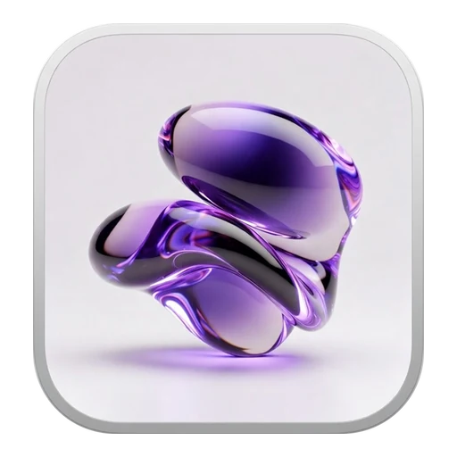
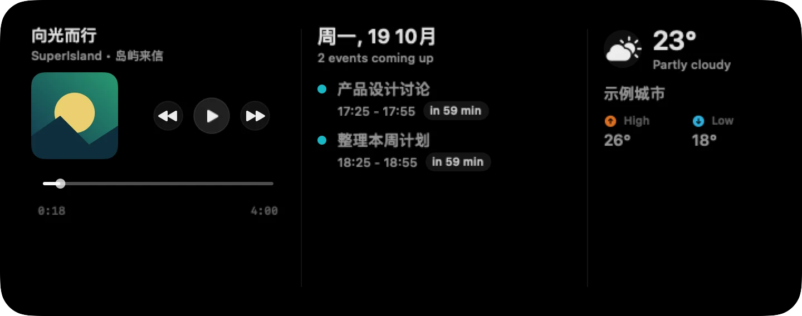
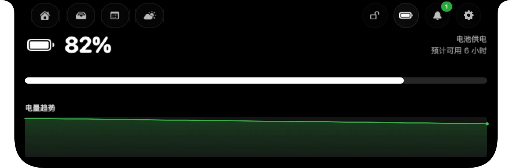
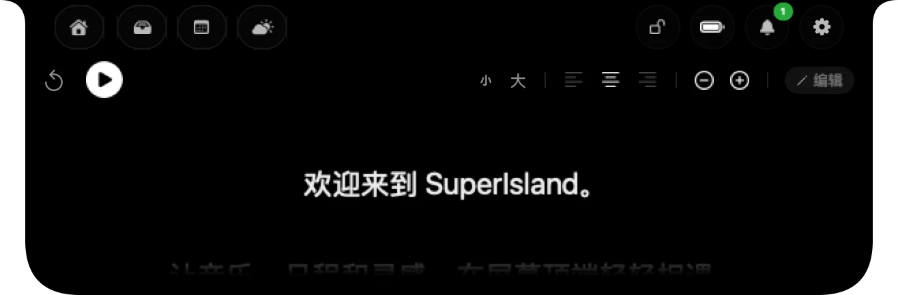
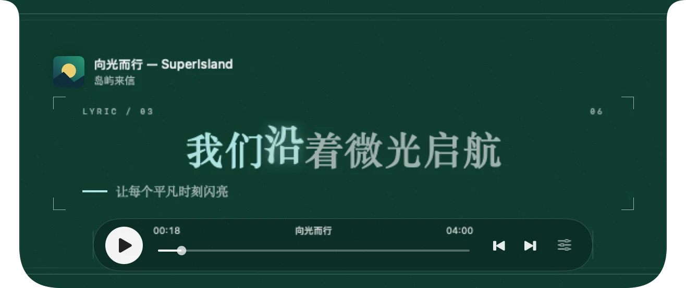
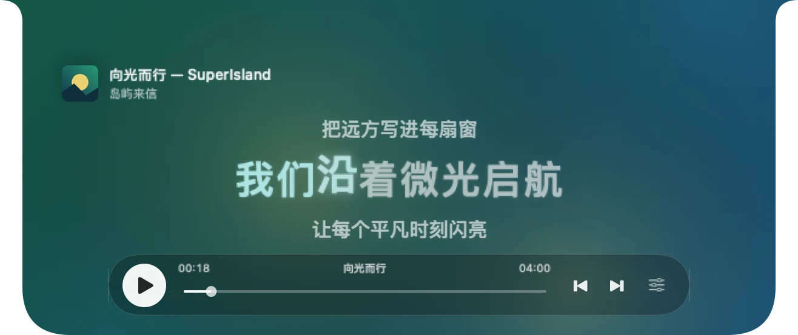

SuperIsland
01
顶部常驻
紧凑、展开、完整展开。让信息在需要时出现，在专注时安静收起。

SuperIsland1.0.10 · 29
音乐、逐字歌词、日程、天气、暂存架与提词器，
让常用工具，住进
Mac 的顶部。

点击标签切换完整原生窗口 · 演示数据
把日常工具，放到视线最近的地方。
SwiftUI 原生构建，让音乐与工作自然相伴。
紧凑、展开、完整展开。让信息在需要时出现，在专注时安静收起。

电量、音量、网络与蓝牙设备，各有自己的位置。
流光、心象、时计、莫奈……整窗原生构图，自由切换。
QQ 音乐 QRC 优先，逐行 LRC 回退，支持歌曲偏移校准。

稿件、字号、滚动速度与语音跟读，让台词留在视线前方。

专辑配色、播放进度、点击歌词跳转，还可开启真实音频频谱。
把正在播放、日历与天气放在一起，首页槽位可以自由调整。

中文增强 · 同步歌词
歌词、播放控制与进度共用原生时钟。
从安静的三行歌词，到完整的动态舞台，让每一首歌都有喜欢的模样。
十五种样式 · 同一份热爱
左右滑动，连同整台 Mac 一起切换歌词场景。
更多可能，由你拓展
JavaScript 扩展，从专注计时到订单物流。
外部服务需配置自己的账号或本机桥接；订单功能依赖网页登录态与页面兼容性。
中文界面，原生交互，现已可以直接下载。
本机签名的开发构建，尚未经过 Apple 公证。
当前安装包适用于 Apple 芯片 Mac，需要 macOS 14 或更新版本。暂未提供 Intel 安装包。
打开下载的 DMG，将 SuperIsland.app 拖入 Applications，再从应用程序中启动。此开发构建为本机签名，未做 Apple 公证；首次运行可能被系统拦截，可查看 README 的安装说明。
使用系统媒体信息，Apple Music、Spotify 提供应用级回退，QQ 音乐通过 MediaRemote Adapter 识别和控制。歌词优先匹配 QRC，缺失时回退 LRC，结果取决于录音版本、网络与服务可用性。
由启用的功能决定：日历、定位、通知、自动化等。真实音频频谱与提词器语音跟读需要额外授权，外部服务扩展需要自行配置。